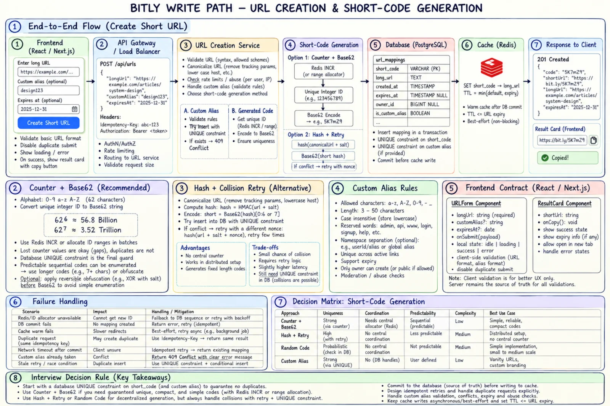

Topic · Scaling Reads: Bitly URL Shortener
Bitly Write Path: Short-Code Generation
Create flow, counter + Base62 vs hash + retry, custom aliases, and why a relational primary key is enough for a long time.


Quick Revision
- Counter/range + Base62: collision-free, compact, needs coordination, enumerable.
- Hash/random +
UNIQUE+ bounded retry: decentralized, unpredictable, collisions grow. - 6 Base62 chars ≈ 56.8B codes; 7 ≈ 3.52T.
- Custom alias = atomic insert under the constraint; reserved words; 409 on clash.
- Commit first, cache second; idempotency key makes retries safe.
Create flow
- User enters URL; frontend validates syntax, sends
POST /api/urlswith an idempotency key. - Gateway: size limits, auth where needed, rate limits.
- Creation Service: authoritative validation and canonicalization.
- Alias → atomic insert under unique constraint; otherwise get a unique integer/range → Base62, or random/hash → retry on conflict.
- Commit to primary.
- Delete negative-cache key; best-effort warm Redis.
- Return 201; frontend shows result card and copy confirmation.
Short-code generation
A) atomic integer → Base62 (0-9 a-z A-Z) → code 62^6 ≈ 56.8B · 62^7 ≈ 3.52T · 62^8 ≈ 218T B) canonical URL + nonce → hash/HMAC → Base62 prefix → conditional insert
- Scale counters safely - batch ranges per instance; accept gaps; fence allocator leadership with epochs; disjoint ranges per region or Snowflake IDs; keep
UNIQUEas final guard; optionally permute before Base62 to resist enumeration. - Hash caveats - deterministic hash = global dedupe unless a nonce is added; longer codes lower collision risk.
- Custom alias - normalize, validate charset/length, reserve
api,admin,login,health,robots.txt; atomic insert, never check-then-insert; consider separate namespace. - Code length - don't hardcode; Base62 grows naturally from 6 to 7 chars.
Storage and services
- Relational is enough - simple mapping, strong uniqueness, low writes, reads offloaded to caches, ~500 GB logical data.
- NoSQL when - it's already your standard, global active-active is required, or measured limits are exceeded - not just "it's big".
- Split read/write services - minimal, replicated, cache-oriented Redirect Service; Creation Service owns validation, aliases, idempotency, code generation. Start as a modular monolith if load doesn't justify it.
- Multi-region creation - one write home region, or disjoint ID ranges per region; coordinate the alias namespace.
Trade-offs
| Choice | Benefit | Cost / risk |
|---|---|---|
| Counter + Base62 | Collision-free, compact, fast | Coordination, predictable |
| Hash/random + retry | Decentralized, less predictable | Collision checks |
| Sequential code | Short, efficient | Enumerable |
| Obfuscated/random code | Hard to enumerate | Longer, more complex |
| Global dedupe by URL | Fewer mappings | Breaks per-user expiry/alias/analytics |
| Multiple codes per URL | Flexible ownership | More storage |
| PostgreSQL | Constraints, mature ops | Cross-region writes need design |
| NoSQL | Native partitioning | Different consistency/ops model |
| Monolith | Simple delivery | Less independent scaling |
| Separate read/write services | Independent scale and SLOs | More contracts and deploys |
Failure modes
- Two writers allocate the same code - atomic allocator + fencing + unique constraint.
- Hash collision overwrites a mapping - conditional insert, bounded retry, never upsert over a code.
- Custom alias race - atomic insert; loser gets 409.
- Allocator down blocks creates - HA allocator, backoff, ranges, fallback generator.
- Lost range gaps - accept them; never reuse uncertain IDs.
- Sequential codes expose private links - random/obfuscated codes + access control.
- Create timed out but committed - idempotency key + lookup by request ID.
- Cache filled before commit - commit first, cache second.
- Double-click / retry duplicates - disable submit, idempotency, return stored result.
- Client/server validation drift - shared schema; server authoritative.
- Old bundle calls new API - backward-compatible contracts, staged deploys.
Interview practice
Answer aloud, then reveal.
Counter or hash?
Counter + Base62: compact, collision-free, coordinated, predictable. Hash/random: decentralized, harder to guess, needs collision handling.
How do you handle collisions?
Atomic unique constraint; for random/hash, retry with a new nonce. Never rely only on probability.
Redis fails after allocating an ID, before the insert?
The ID is lost - a harmless gap. Don't reuse uncertain IDs.
Insert succeeded but the client timed out?
Client retries with the same idempotency key; service returns the existing mapping.
Avoid custom aliases colliding with generated codes?
One atomic unique namespace with reserved patterns, or separate prefixes; the DB constraint decides.
Make sequential codes less guessable?
Keyed reversible permutation before Base62, or random/HMAC codes. Obfuscation isn't authorization.
How would multi-region creation work?
Single write home region, or disjoint ID ranges/Snowflake node IDs per region; replicate; coordinate alias ownership.